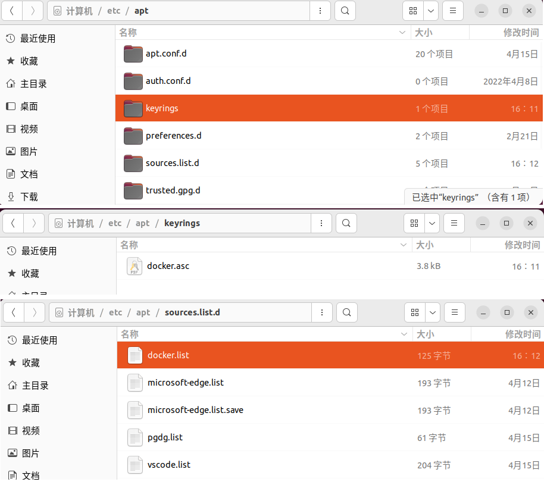
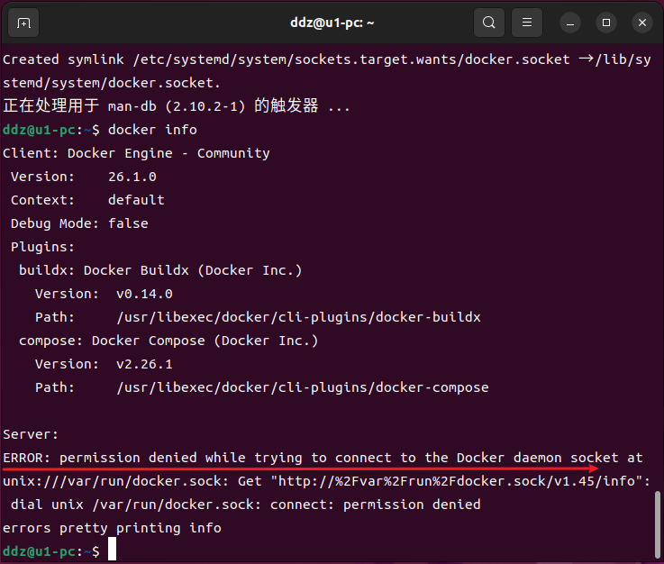
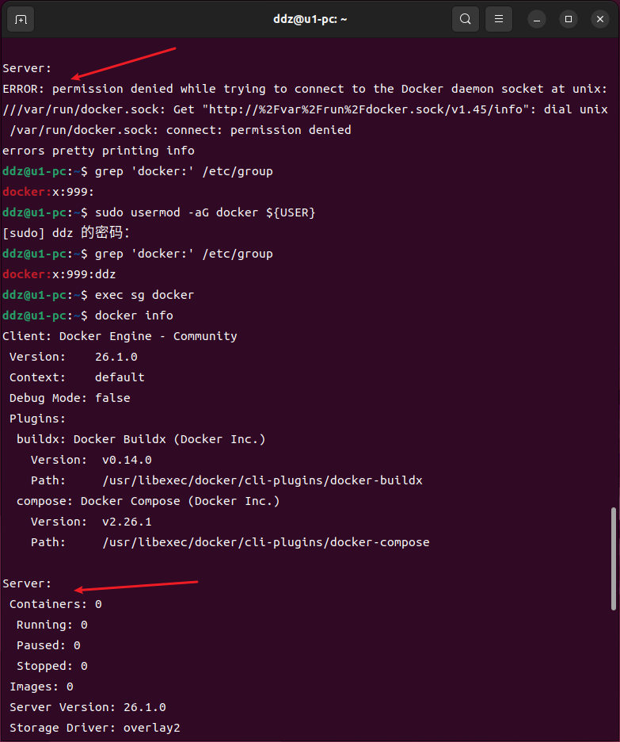
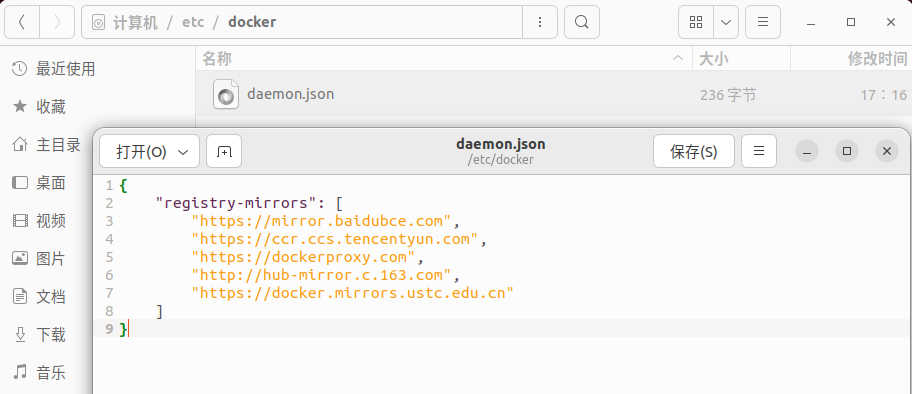

官网：Docker: Accelerated Container Application Development
docker,docker,docker.多年过去，本想与你再无交集，奈何苍天弄人，还得再上你的贼船……
# 1、镜像相关
# 列出本地主机上的镜像
docker images
# 拉取镜像
docker pull xxx
# [强制 -f]删除一个或多个镜像
docker rmi -f xxx yyy zzz
# 删除所有已标记的镜像（docker images -q 会列出所有镜像的ID）
docker rmi $(docker images -q)
# 删除所有未使用的镜像，包括未标记的镜像（-a 参数表示删除所有未使用的镜像，而不仅仅是悬空的镜像）
docker image prune -a
# 2、容器相关
# 列出当前正在运行的容器（添加 -a 列出所有容器，包括未运行的）
docker ps
# 运行一个新的容器实例
# -d 表示以 detached 模式运行容器，-p 80:80 表示将容器的 80 端口映射到宿主机的 80 端口，--name nginx001 为容器指定一个名称。
docker run -d -p 80:80 --name nginx001 nginx
# 停止一个或多个正在运行的容器
docker stop nginx001
# 停止所有容器
docker stop $(docker ps -aq)
# 启动一个或多个已经停止的容器
docker start nginx001
# 删除所有已停止的容器（不会影响正在运行的容器）
docker container prune
# [强制 -f]删除一个或多个容器
docker rm -f nginx001 nginx002
# [强制 -f]删除所有正在运行和已停止的容器
docker rm -f $(docker ps -aq)
# 在运行的容器中执行命令（-it 提供一个交互式的终端）
docker exec -it nginx001 /bin/bash
# 获取容器的日志输出
# -f 实时输出日志信息
# -n 或 --lines：仅显示最后几行日志
# --since 仅显示自给定时间以来的日志
docker logs nginx001
# 3、其他
# 下面命令不仅会删除所有未使用的镜像，还会删除所有未使用的容器、网络和可选地，使用 --volumes 参数还可以删除未使用的卷
docker system prune -a
这里讲述一下
# 卸载安装的程序
sudo apt purge docker-ce docker-ce-cli containerd.io docker-buildx-plugin docker-compose-plugin docker-ce-rootless-extras
# 删除 images, containers, and volumes
sudo rm -rf /var/lib/docker
sudo rm -rf /var/lib/containerd
# 删除 apt 源相关
sudo rm -rf /etc/apt/keyrings
sudo rm -rf /etc/apt/sources.list.d/docker.list
# 删除 docker 用户组
sudo groupdel docker
# 添加 GPG key
sudo apt update
sudo apt install ca-certificates curl
sudo install -m 0755 -d /etc/apt/keyrings
sudo curl -fsSL http://mirrors.huaweicloud.com/docker-ce/linux/ubuntu/gpg -o /etc/apt/keyrings/docker.asc
sudo chmod a+r /etc/apt/keyrings/docker.asc
# 添加仓储到 apt 源:
echo \
"deb [arch=$(dpkg --print-architecture) signed-by=/etc/apt/keyrings/docker.asc] http://mirrors.huaweicloud.com/docker-ce/linux/ubuntu \
$(. /etc/os-release && echo "$VERSION_CODENAME") stable" | \
sudo tee /etc/apt/sources.list.d/docker.list > /dev/null
sudo apt update
# 安装
sudo apt install docker-ce docker-ce-cli containerd.io docker-buildx-plugin docker-compose-plugin


上图中使用
# 判断 docker 用户组是否存在
# 查看用户组列表
cat /etc/group
# 搜索特定的用户组
grep 'docker:' /etc/group
# 添加 docker 用户组
sudo groupadd docker
# 删除 docker 用户组
sudo groupdel docker
# 添加当前用户到docker组（ ${USER}是一个环境变量，代表当前登录的用户名 ）
# 如果你需要为另一个用户添加权限，将${USER}替换为那个用户的用户名。
sudo usermod -aG docker ${USER}
# 为了使组变更生效，你需要注销并重新登录，或者重新启动你的终端，可以通过以下命令重新加载组
exec sg docker
# 或者
newgrp docker

干啥都得镜像啊，当然也少不了
{
"registry-mirrors": [
"https://mirror.baidubce.com",
"https://ccr.ccs.tencentyun.com",
"https://dockerproxy.com",
"http://hub-mirror.c.163.com",
"https://docker.mirrors.ustc.edu.cn"
]
}
你可能需要先修改一下目录的权限
# 如果不存在 daemon.json 文件
sudo chmod -R 777 /etc/docker
# 直接修改文件权限
sudo chmod -R 777 /etc/docker/daemon.json

修改之后需要重启一下服务